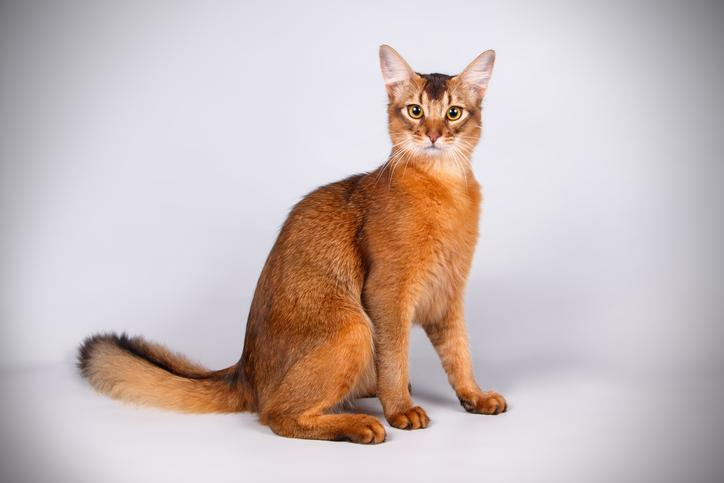

Fue en la década de los 50 del pasado siglo cuando la hibridación, llevaba a cabo por criadores de Estados Unidos, Nueva Zelanda, Australia y Canadá, entre gatos abisinios con siameses, angoras y persas, dio lugar a la aparición en las camadas de ejemplares con pelo largo. Al principio estos individuos de pelo más largo que sus congéneres eran despreciados y regalados, ya que para los criadores carecían de interés al no poseer pedigrí. Sin embargo, con el transcurso del tiempo y la sucesión de cruces, cada vez aparecían más de estos cachorros en las camadas, as,í en los 60, un criador canadiense decidió separar a estos gatitos de pelo largo y consiguió que se constituyera la raza. La criadora americana Evelyn Mague fue la que logró en 1967 conseguir criar gatos abisinios de pelo largo de forma controlada. Fue en 1979 cuando se reconoce por primera vez de manera oficial la raza de gatos somalí, que fue denominada de esta forma debido a que proviene de los abisinios, los cuales a su vez son originarios de Etiopía, país limítrofe a Somalia.
Es un gato de tamaño mediano, con un peso comprendido entre los 3,5 y los 5 kilogramos, aunque hay ejemplares que pueden llegar a pesar 7 kilos. Su cuerpo es musculoso y estilizado, lo que le dota de una apariencia sumamente elegante y majestuosa. Sus extremidades son alargadas y esbeltas, pero no por ello dejan de ser fuertes y robustas. Generalmente, su esperanza de vida es de entre unos 9 y 13 años. La cabeza del gato somalí es triangular, con una suave hendidura que hace que su frente sea ligeramente abombada. El hocico es alargado, al igual que la nariz, y con forma de cuña. Sus orejas son grandes y anchas, con terminación en punta marcada y pelo más largo, como en la cola, la cual es larga y en forma de plumero, con un pelo largo y denso. Los ojos son grandes y almendrados, de párpados oscuros, presentando una gama de colores que van desde el verde al dorado o al cobre. El pelo del gato somalí es semilargo, aunque en la cola y las orejas es algo más largo que en el resto del cuerpo. Esta capa de pelo es densa y suave, no presenta capa lanosa, por lo que es sensible al frío.

Se caracteriza por ser activo y risueño, adora la compañía y los juegos con sus humanos, pues es una raza de gato muy enérgica y necesita liberar toda esa energía para mostrarse relajado y evitar el nerviosismo. Por si esto no fuera suficiente, el gato somalí es muy inteligente, mostrándose muy colaborador en el adiestramiento y aprendiendo órdenes sencillas con una sorprendente facilidad y rapidez. A estos animales les encanta hacer vida en el exterior, pero esto no quiere decir que no se adapten perfectamente a la vida en un piso, aunque en este caso hemos de proporcionarle los estímulos suficientes para que no se aburra y pueda ejercitarse y saciar su inquieta curiosidad.

Necesitará cepillados diarios, con el cepillo más conveniente según las características de su manto, para mantener su pelaje sano y libre de suciedad y pelos muertos. El mantenimiento del pelo será sencillo, ya que este no se suele enredar y no es demasiado largo. Podemos complementar los cepillados con el uso de productos contra las inconvenientes bolas de pelo, tales como la malta, vaselina o aceites específicos para este uso. Por último en lo referente los cuidados del pelo del gato somalí, para conseguir que su pelaje luzca brillante y lustroso podemos seguir estos trucos para potenciar su brillo natural. Hemos de proporcionarle una alimentación de calidad, con piensos lo más ricos en carnes posible y con una menor proporción de cereales y subproductos. Además, hemos de moderar su ingesta, ya que es un gato que tiende a la glotonería. Aunque bien es cierto que la suele compensar con sus ratos de juegos y actividad física, especialmente los felinos tranquilos o sedentarios pueden llegar a desarrollar fácilmente sobrepeso y obesidad, con los trastornos que estos acarrean. Así mismo, hemos de controlar el estado de sus uñas, ojos, orejas, boca y dientes.

La salud del gato somalí es realmente envidiable, ya que la raza no presenta enfermedades congénitas, siendo una de las más sanas y fuertes de las razas felinas. Sin embargo, pese a la buena predisposición de gato somalí y a su magnífica genética, hemos de mantener a nuestro gato protegido de diversas enfermedades contagiosas.